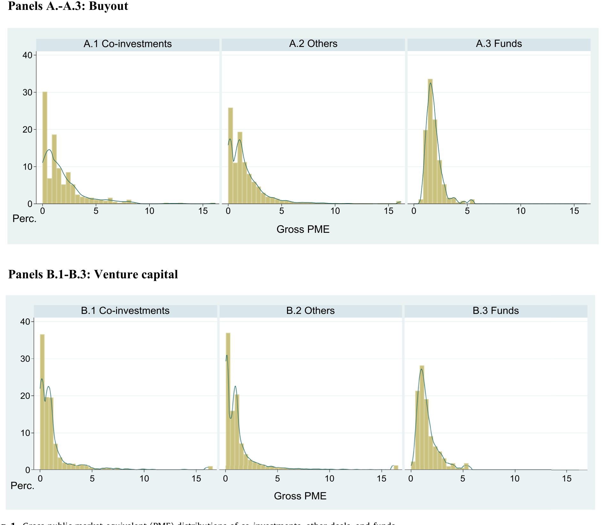
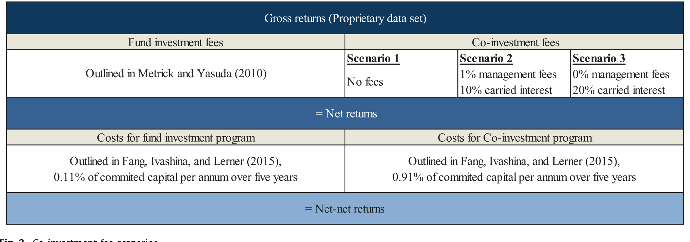
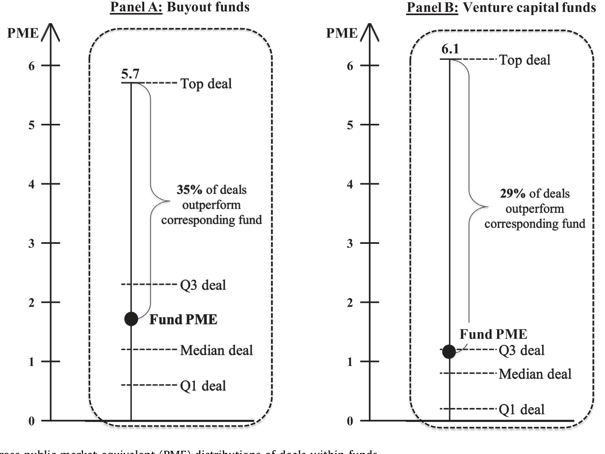
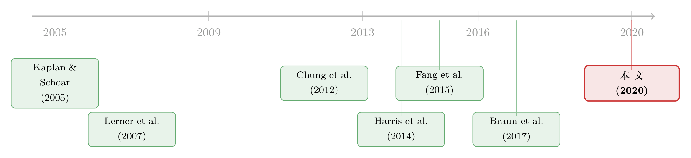

「挑剩的」还是「真便宜」？——给私募股权跟投做一次大样本体检
本文读的是 Braun, Jenkinson & Schemmerl (2020, JFE)：用迄今最大的一份交易级跟投样本（1016 笔跟投、458 位投资者、464 只基金）检验「GP 是不是把挑剩的烂交易甩给跟投人」。结论与此前唯一一篇相关论文 Fang, Ivashina & Lerner (2015) 截然相反——没有逆向选择：跟投与留在基金里的交易，毛回报分布几乎重合；而由于费用更低，合理规模的跟投组合在净回报上显著跑赢基金。
1 一顿看上去免费的午餐
先说一件让所有 LP（有限合伙人）都心动的事。
你把钱投进一只私募股权基金，要付两笔钱：每年大约 2% 的管理费，外加赚钱部分约 20% 的业绩报酬，也就是 附带权益 (carried interest, carry)。几十年下来，这两笔费用对净回报的侵蚀有多大？Metrick and Yasuda (2010)、Phalippou (2009) 都算过——大得惊人。于是近年来 LP 们想出了一条「绕过收费站」的路：跟投 (co-investment)。GP（普通合伙人，即基金管理人）在做一笔交易时，邀请 LP 在基金之外、用一个专门设立的特殊目的实体 (special purpose vehicle, SPV) 直接再投一笔。这笔追加投资通常不收费、不抽成，或费率极低。一份 2015 年的调查里，一半的私募投资者说自己做过跟投，其中四分之三还打算加码。
听上去近乎免费的午餐。可天下哪有白吃的午餐？
这里藏着一个让人脊背发凉的可能：交易是 GP 挑出来给你的。GP 当然知道哪些交易好、哪些交易悬。如果一笔交易他笃定能赚大钱、能拿到丰厚的 carry，他凭什么愿意把份额分给不交钱的跟投人、稀释自己的收益？反过来，越是他自己心里没底、风险拿不准的交易，越有动机「匀」一点出去给别人扛。
这就是金融学里最经典的幽灵——逆向选择 (adverse selection)。你以为占了便宜，其实买到的是一筐被 GP 用私有信息筛过的「柠檬」。（关于「先卖给中间商」如何反而能治好柠檬市场，可参见《承诺去交易：为什么「先卖给中间商」反而能治好柠檬市场》。）
而这恰恰是上一篇研究给出的判决。
2 一桩需要被重审的旧案
在这篇论文之前，关于跟投的学术证据只有一篇：Fang, Ivashina and Lerner (2015)。他们从 7 家经验丰富的 LP 手里拿到数据，基于 103 笔跟投观测，得出一个相当冷峻的结论——「跟投跑输了与之共同投资的基金，原因是交易存在明显的逆向选择」。一句话：你被挑剩的了。
这个结论在业界引起了不小的回响，但它有一个绕不开的软肋：样本。7 家 LP，一百来笔交易。这样的样本反映的，其实是两层选择叠加的结果——既有 GP 决定把哪些交易拿出来跟投，又有这 7 家特定 LP 决定接不接。他们观察到的跟投表现差，可能不是因为 GP 给的都是烂交易，而是因为这几家 LP 自己挑掉了好交易、留下了差的。换句话说，Fang et al. 测到的是「GP 的选择 × 这几个投资者的选择」的合成效果，而我们真正想问的，只是前半句：GP 给出来的交易，本身是不是被系统性地选过？
要回答这个问题，你需要的不是 7 家 LP 的私房数据，而是一张能看见整个交易宇宙的网。
3 识别策略：为什么必须比「毛回报」
这篇论文最聪明、也最该被记住的一步，是它想清楚了「该比什么、跟谁比」。
先说「跟谁比」。作者的反事实 (counterfactual) 不是别的基金，而是同一只基金里那些没被拿出来跟投的交易。逻辑很干净：同一只基金、同一个 GP、同一段时间，唯一的差别就是这笔交易有没有被 offer 出来跟投。于是检验逆向选择，就变成了一个「同门师兄弟」之间的比较——被挑出来 offer 的那些，回报分布会不会系统性地更差？计量上，他们用回归控制了投资年份、行业、是哪个 GP 操盘、基金序号 (fund sequence) 等一系列回报的潜在驱动因素，再看「是否跟投」这个虚拟变量的系数显不显著。
再说「比什么」——这是全文的命门。必须比毛回报 (gross return)，绝不能比净回报 (net return)。 为什么？因为净回报里混进了 carry：一只基金只有在整体业绩越过门槛收益率 (hurdle rate) 之后才付 carry，于是好交易往往被 carry 抽走一块、看起来没那么好；而那些没越过门槛的基金，好交易反倒不被抽成。这一层费用会人为地压扁好交易、抹平差异，把逆向选择的信号搅成一锅糊。只有在费用之前的毛回报上比较，GP 的选择偏误才会干干净净地显形。
那么用什么指标衡量毛回报？作者用的是 Kaplan and Schoar (2005) 提出、如今私募业绩评价的标准工具——公开市场等价 (public market equivalent, PME)。它的思路是：把一笔交易实际发生的每一次出资和每一次分配，都按同期公开市场指数（如标普 500）的累计回报折现到期初，再相除。
上式里 \(D_t\) 是 \(t\) 时刻投资者收到的分配，\(C_t\) 是被调用的出资，\(R_t\) 是公开市场指数到 \(t\) 时刻的累计回报。直觉是：分子分母都用「同一笔钱如果投进股市会变成多少」来贴现，于是 \(\mathrm{PME} > 1\) 意味着这笔私募投资跑赢了同期公开市场，\(\mathrm{PME} < 1\) 则跑输。它把「时机」和「现金流的长短脚」都吸收进了一个可比的数字里——而要算 PME，你必须有每一笔交易按月的现金流，这正是本文数据的过人之处。
4 数据：从十八万笔交易里「捞」出跟投
没有任何现成数据库专门记录跟投，作者只能自己造一个样本。两步走：
第一步，构造跟投的全宇宙。 从 Capital IQ 的交易库出发——里面约有 180,000 笔私募交易。跟投按定义至少要有「一个 GP + 另一个投资者」同时投同一家公司，于是先筛出投资者多于一个的交易，再逐一甄别每个投资者的类型，识别出 6894 个不同的投资者，最终保留 12,106 笔「至少含一个 GP 和一个 LP」的交易。
第二步，接上回报。 Capital IQ 没有回报数据。作者把上述样本与一份专有的交易级现金流数据库匹配——这份数据来自三家大型母基金 (fund-of-funds) 管理人在尽职调查中收集的、约 25,000 笔交易的完整现金流，且无论母基金最终投没投，GP 的全部基金与交易历史都在内，因此天然没有「只记录成功者」的幸存者偏差。Braun et al. (2017) 研究 GP 业绩持续性时用的就是它。
匹配之后，主样本落定：1016 笔跟投，来自 458 位 LP，涉及 464 只 1978–2010 年间募集的买断 (buyout) 与风险投资 (venture capital, VC) 基金；这些基金总共投了 13,430 家组合公司。算下来，样本基金里 7.6% 的交易是跟投——这和 Cambridge Associates「跟投约占私募投资活动 5% 以上」的估计相吻合。
一个绕不开的质疑：样本只包含成交了的跟投。万一有些被 offer 出来、却被所有 LP 集体拒绝的烂交易，根本没进样本呢？作者的回应有两层。其一，跟投需求远超供给：调查显示约四分之一的 LP「来者不拒」，几乎是每个跟投机会都接；其二，他们访谈了 10 位做跟投的 GP，问「在你的经历里，有多大比例的跟投没被任何投资者接走？」——十位的回答都是：从未发生过。所以作者认为，他们观察到的成交样本，本质上就反映了 GP 的选择，而非被 LP 的拒绝所污染。这也正是本文样本相对 Fang et al. (2015) 的关键优势。
5 主要结果：四个问题，一次反转
问题一：什么决定了一笔交易被拿出来跟投？ 答案出人意料地朴素——交易规模相对基金规模。大交易显著更可能被 offer 出来跟投。这和「GP 用跟投来限制单笔交易的集中度敞口」的解释一致：一只基金对任一单笔交易的占比有上限，遇到相对基金而言太大的交易，与其放弃，不如拉 LP 来一起扛。这是一个关于分散化、而非关于好坏的故事。
问题二：被 offer 的交易，毛回报更差吗？ 这是全文的核心。作者画出了跟投、其余交易、以及基金三者的毛 PME 分布——三条线几乎叠在一起。计量回归在控制了年份、行业、GP、基金序号之后，「是否跟投」的系数既不显著为负，也不显著为正。逆向选择，没有。正向选择，也没有。如图 1 所示，跟投并不是被挑剩的「柠檬」，也不是被偏袒的「樱桃」，它就是基金交易池里随机的一瓢。

Figure 1: Gross public market equivalent (PME) distributions of co-investments, other deals, and funds
问题三：会不会换个角度，是特定类型的投资者被「区别对待」？ 也许 GP 不在交易层面挑，而在投资者层面挑——把好交易留给养老金、把差交易塞给保险公司？或者老 LP 拿好货、外人拿次品？作者逐一检验了投资者类型（养老金、捐赠基金、保险公司……）和投资者特征（经验、与 GP 的关系、是否本基金 LP），结果几乎没有显著差异。唯一的例外是：有过跟投经验的投资者回报更高——但仅出现在 VC 里。
问题四：那 LP 到底该不该跟投？ 反转就藏在这里。既然毛回报一样、费用却更低，跟投的净回报自然更高。模拟合理的费用结构与运营成本后，作者发现买断跟投平均比对应基金多出 0.10 到 0.29 的净 PME，VC 则多出 0.19 到 0.39。

Figure 3: Co-investment fee scenarios
但真正关键的一步在于：单笔跟投，平均反而跑输基金。 听起来矛盾，其实是分布的问题。交易级回报是高度右偏 (highly skewed) 的——一大堆表现平平甚至赔本的交易，被极少数几个「全垒打」拉起整体均值。在一只买断基金里，只有 35% 的交易能跑赢基金整体；VC 里更低，只有 29%。基金本身就是一篮子这种交易的分散组合，而买单笔跟投，等于把自己直接暴露在这条偏态分布的左侧（如图 2 所示）。

Figure 2: Illustrative gross public market equivalent (PME) distributions of deals within funds
于是结论变得既清醒又实用：跟投要赚钱，必须做成组合。模拟显示，约 10 笔买断跟投构成的组合就能平均跑赢基金（扣费扣成本后）；VC 因为更偏，需要 20 笔以上，而且只有在跟投完全不收费、不抽成时才能稳定跑赢。换句话说，跟投不是「挑一笔好的」的游戏，而是「攒够一篮子、把费用省下来」的游戏。
6 文献脉络
把这条线索捋一捋，就能看清这篇论文站在哪里。
最上游，是关于私募业绩本身的奠基性工作：Kaplan and Schoar (2005) 不仅给出了 PME 这把尺子，也开启了用现金流而非 IRR 衡量私募回报的传统；Harris, Jenkinson and Kaplan (2014, 2016) 则反复确认私募历史上跑赢公开市场、但二者正在收敛——正是这种收敛，把压力压到了费用上，催生了 LP 对跟投的兴趣。与此并行的一条支线，是「费用到底吃掉多少」的核算：Metrick and Yasuda (2010)、Phalippou (2009)。
接着，研究的焦点转向 LP 的「选择能力」与 GP 的「声誉约束」。Lerner, Schoar and Wongsunwai (2007) 的「有限合伙人之谜」、Sensoy, Wang and Weisbach (2014)、Cavagnaro et al. (2019) 都在问：不同 LP 的选择真能带来回报差异吗？而 Chung et al. (2012) 指出，GP 的长期价值来自募集下一只基金的能力——这正是本文「为什么 GP 不敢逆向选择」的理论支点：短期占跟投人便宜，会砸掉长期声誉。

然后是直接的前作：Fang, Ivashina and Lerner (2015)，第一篇用 7 家 LP 数据做跟投的论文，给出「逆向选择、跟投跑输」的判决。再往后，Braun, Jenkinson and Stoff (2017) 贡献了本文赖以为生的交易级数据库（原本用于研究 GP 业绩持续性）。
本文 (Braun, Jenkinson and Schemmerl, 2020) 就坐落在这两者的交汇处：用 Braun et al. (2017) 的大数据，去重审 Fang et al. (2015) 的旧案。它不是在原结论上添砖加瓦，而是直接推翻了它——并在论文第 5 节里专门复刻了 Fang et al. 的小样本方法，论证为什么样本规模与代表性会导致两篇论文走向相反。（关于私募市场里 LP 如何挑选管理人，可参见《没有战绩，照样拿到钱：私募市场里，LP 为什么愿意把钱交给「新人」？》；关于 VC 反过来挑选 LP，可参见《把名字从名单上划掉：当「透明」成了顶级 VC 拒绝公募资金的理由》。）
评论与延伸（Q&A + 研究方向）
(a) 几个可能的疑问
Q：本文和 Fang et al. (2015) 到底差在哪，凭什么相信本文？
差在样本构造的逻辑层级。Fang et al. 从 7 家 LP 出发，观测到的是「GP 的选择 × 这 7 家 LP 的接受/拒绝」的合成结果；本文从整个交易宇宙（Capital IQ 全库）出发，加上「跟投需求远超供给、GP 总能找到人接」的论证，把 LP 的拒绝这一层基本剥离，于是更干净地识别出GP 单方的选择。再加上
1016vs103的样本量与投资者广度差异，本文的外部有效性更强。当然，这不等于 Fang et al. 错了——很可能他们测到的「跑输」是那 7 家 LP 自己的选择能力问题，而非 GP 的逆向选择。
Q：「比毛回报」真的比「比净回报」更干净吗？会不会反而丢了投资者真正在乎的东西？
要分清两个问题。检验逆向选择（GP 有没有挑）时，毛回报无疑更干净，因为净回报被 carry 的门槛机制扭曲。但投资者最终在乎的是净回报，所以本文并没有止步于毛回报——它在第 4 节专门模拟了费用结构，把「无逆向选择 + 低费用」翻译成净回报上的显著跑赢。两步是互补的，不矛盾。
Q：访谈 10 位 GP 说「从没有跟投没人要」，这能算严肃证据吗？
这是全文最软的一环，作者自己也只把它当作辅证。真正承重的是供需失衡这个结构性事实：约四分之一 LP「来者不拒」，平均每笔跟投有几十个潜在接盘者。访谈只是给这个数量级的论断添了个一致的注脚。但严格说，「成交样本 = GP 选择样本」仍是一个假设而非被证明的事实——这是本文识别上的主要软肋。
Q：单笔跟投平均跑输基金，又说跟投组合跑赢基金，这不自相矛盾吗？
不矛盾，关键在偏态。交易级回报极度右偏，均值被少数全垒打抬高，而中位数远低于均值——所以「随机抓一笔」大概率落在均值之下（买断只有 35%、VC 只有 29% 的交易能跑赢基金）。基金本身是这些交易的分散组合；你只有自己也攒够一篮子（买断约 10 笔、VC 20+ 笔），才能复制这种分散、再靠省下的费用反超。
Q：样本期到 2010 年，结论对今天的跟投市场还成立吗？
这是个真问题。2010 年后跟投规模、专业化中介、母基金式跟投组合都爆发式增长，GP 与 LP 的博弈结构可能已变。本文的结论是「在 1981–2010 这段、这种供需格局下没有逆向选择」，外推到如今需谨慎——尤其当跟投从「稀缺恩惠」变成「标准产品」时，GP 的声誉约束与选择动机都可能不同。
Q：为什么唯独「有跟投经验的 LP 在 VC 里回报更高」？
作者没有展开机制，但合理的解释是：VC 交易的信息不对称和异质性远高于买断，挑选与尽调能力更值钱，因此「经验」能在 VC 里转化为可观测的回报溢价；而买断交易相对标准化，经验的边际价值被摊薄。这恰好和「VC 需要更大组合才能跑赢」相互印证——VC 是个更考验本事的赛道。
(b) 几个可能的研究问题与提案
1. 把「被 offer 却无人接」的缺失样本真正补上。 【经济故事】本文识别的阿喀琉斯之踵，就是只看见成交的跟投。若能拿到某家大型 GP 完整的 offer 清单（含被全员拒绝的），就能直接检验「成交样本 = 选择样本」这一假设，而非靠访谈和供需论证。 【可行性】低到中。需要单一 GP 或平台的内部 offer 台账，极难获取；但近年一些跟投撮合平台（如电子化的 deal-by-deal 平台）可能留有完整邀约与接受记录，是潜在突破口。
2. 把同样的「毛回报体检」搬到公司债与信用市场的「俱乐部交易」上。 【经济故事】私募信贷 (private credit)、银团贷款里也存在「主承销商把哪一份额留给自己、把哪一份额分销出去」的选择问题，逻辑与跟投同构——分销出去的份额是不是被逆向选择过？ 【可行性】中。需要贷款级现金流与份额分配数据（如 LSTA、DealScan 配合违约/回收数据），识别上可借鉴本文「同一笔贷款、留存 vs 分销」的同门比较。流动性与违约数据的匹配是主要难点。
3. 外资 LP 是否系统性地被「区别对待」？ 【经济故事】本文检验了投资者类型，但没专门看跨境这一维度。GP 在分配跟投份额时，可能因信息不对称、监管或退出便利，对本国与外国 LP 区别对待——这正是「外资持有人」研究的一个自然延伸。 【可行性】中。Capital IQ + Preqin 可标注投资者国别，沿用本文回归框架加一个外资虚拟变量即可；难点在样本中外资跟投的数量是否足够支撑分组检验。
4. 跟投组合的「流动性」代价。 【经济故事】本文比的是回报，但跟投相比基金 LP 份额，二级转让市场更薄、流动性更差。把这层流动性折价计入，10 笔买断组合的「跑赢」还剩多少？ 【可行性】中到高。可用私募二级市场 (secondary market) 的成交折价数据给跟投份额定价，在本文净回报模拟里再加一道流动性调整，是一个干净的增量。
5. 跟投与 GP 募资周期的因果链。 【经济故事】本文提到买断基金更可能在基金生命周期早期提供跟投，疑似用来在募下一只基金前「示好」LP。能否用基金序号、募资时点构造一个更接近因果的检验：早期跟投是否真的提高了 LP 对下一只基金的出资概率？ 【可行性】高。Preqin / Capital IQ 有基金募集时点与 LP 名单，可构造「跟投经历 → 后续出资」的面板，识别上可用基金序号与同 GP 内变化做固定效应。这是 doable 且新意明确的方向。
参考文献
- Braun, R., Jenkinson, T., & Schemmerl, C. (2020). Adverse selection and the performance of private equity co-investments. Journal of Financial Economics 136(1), 44–62.
- Braun, R., Jenkinson, T., & Stoff, I. (2017). How persistent is private equity performance? Evidence from deal-level data. Journal of Financial Economics 123(2), 273–291.
- Cavagnaro, D., Sensoy, B., Wang, Y., & Weisbach, M. (2019). Measuring institutional investors' skill from their investments in private equity. Journal of Finance, in press.
- Chung, J.-W., Sensoy, B., Stern, L., & Weisbach, M. (2012). Pay for performance from future fund flows: the case of private equity. Review of Financial Studies 25(11), 3259–3304.
- Fang, L., Ivashina, V., & Lerner, J. (2015). The disintermediation of financial markets: direct investing in private equity. Journal of Financial Economics 116(1), 160–178.
- Harris, R., Jenkinson, T., & Kaplan, S. (2014). Private equity performance: what do we know? Journal of Finance 69(5), 1851–1882.
- Harris, R., Jenkinson, T., & Kaplan, S. (2016). How do private equity investments perform compared to public equity? Journal of Investment Management 14(3), 1–24.
- Kaplan, S., & Schoar, A. (2005). Private equity performance: returns, persistence, and capital flows. Journal of Finance 60(4), 1791–1823.
- Lerner, J., Schoar, A., & Wongsunwai, W. (2007). Smart institutions, foolish choices: the limited partner performance puzzle. Journal of Finance 62(2), 731–764.
- Metrick, A., & Yasuda, A. (2010). The economics of private equity funds. Review of Financial Studies 23(6), 2303–2341.
- Phalippou, L. (2009). Beware of venturing into private equity. Journal of Economic Perspectives 23(1), 147–166.
- Sensoy, B., Wang, Y., & Weisbach, M. (2014). Limited partner performance and the maturing of the private equity industry. Journal of Financial Economics 112(3), 320–343.